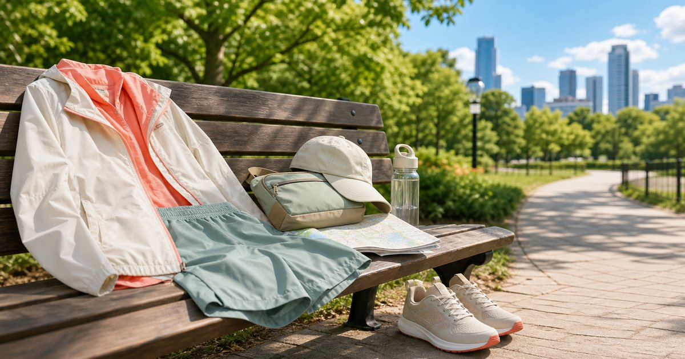

Elite Fashion｜週末輕戶外穿搭：城市感、防曬外套、短褲與小包怎麼搭
週末輕戶外不必穿成登山裝。用防曬外套、短褲、休閒鞋、小包與帽款，整理能在城市和戶外之間轉換的穿搭。

先判斷是城市散步，還是短程戶外
輕戶外穿搭先看行程強度。城市散步可以更重視外型和舒適，短程戶外則要看日曬、流汗、地面和收納。
可以把 Litume 意都美、UV100、UD LAB、Be yourself、KANGOL 與 95 SNEAKER 放在同一個場合裡比較，但不要只看外型。編輯部會先看版型、重量、材質、收納、是否能和既有衣物搭配，以及它在上班、旅行或週末之間能不能轉換。
比較穩妥的順序是先確認 行程是否會流汗、是否需要長時間步行。常見失誤是 把短程戶外穿得過度正式，或把城市行程穿得太像裝備；在 河濱、公園、市集、郊山與週末咖啡店 裡，能被反覆穿用、容易保養、場合感清楚的品項，比一次買很多更實際。
- 城市和戶外的比例先抓清楚。
- 行程越長，鞋和包越要優先。
防曬外套要能收，不只要能穿
週末外套常常早上需要、下午嫌熱。能否收進包裡，會比單看外型更重要。
可以把 UV100、Litume 意都美、UD LAB 與 Be yourself 放在同一個場合裡比較，但不要只看外型。編輯部會先看版型、重量、材質、收納、是否能和既有衣物搭配，以及它在上班、旅行或週末之間能不能轉換。
比較穩妥的順序是先確認 外套是否輕、是否好摺、是否搭得上短褲或長褲。常見失誤是 外套好看但收不進包，整天拿在手上；在 夏季戶外、城市步行與短程旅行 裡，能被反覆穿用、容易保養、場合感清楚的品項，比一次買很多更實際。
- 外套先看重量和收納體積。
- 顏色可選能搭多套下身的方向。
短褲與休閒褲要看活動量
週末褲裝要能坐、走、上車和拍照。太緊或口袋位置不好，都會影響整天使用感。
可以把 Be yourself、Litume 意都美、95 SNEAKER 與 KANGOL 放在同一個場合裡比較，但不要只看外型。編輯部會先看版型、重量、材質、收納、是否能和既有衣物搭配，以及它在上班、旅行或週末之間能不能轉換。
比較穩妥的順序是先確認 腰頭、褲長、口袋和坐下活動量。常見失誤是 只看版型照片，沒有想整天步行狀態；在 週末市集、短程健行與親友聚餐 裡，能被反覆穿用、容易保養、場合感清楚的品項，比一次買很多更實際。
- 口袋位置會影響小物收納。
- 短褲長度要配合鞋款和場合。
小包要放必要物，不放所有物
輕戶外小包只負責手機、卡片、鑰匙、濕紙巾或防曬小物，不應取代整個旅行包。
可以把 UD LAB、S′AIME、KANGOL 與 Be yourself 放在同一個場合裡比較，但不要只看外型。編輯部會先看版型、重量、材質、收納、是否能和既有衣物搭配，以及它在上班、旅行或週末之間能不能轉換。
比較穩妥的順序是先確認 必要物有幾件、包款是否貼身、取物是否方便。常見失誤是 小包太小或太多隔層，真正要拿時反而卡；在 騎車、步行、拍照與咖啡店停留 裡，能被反覆穿用、容易保養、場合感清楚的品項，比一次買很多更實際。
- 小包容量先用實際物品測。
- 太多隔層不一定更好找。
鞋款決定你能不能多走一站
週末行程常常比想像中走得更遠。鞋款要看地面、步行時間和是否會進餐廳。
可以把 95 SNEAKER、鞋掌櫃、KANGOL 與 Litume 意都美 放在同一個場合裡比較，但不要只看外型。編輯部會先看版型、重量、材質、收納、是否能和既有衣物搭配，以及它在上班、旅行或週末之間能不能轉換。
比較穩妥的順序是先確認 鞋底、重量、顏色和是否搭短褲。常見失誤是 穿了只適合拍照的鞋，走半天就想回家；在 城市公園、展覽、市集與郊山步道 裡，能被反覆穿用、容易保養、場合感清楚的品項，比一次買很多更實際。
- 鞋款先看實際步行時間。
- 白鞋或淺色鞋要考慮清潔成本。
城市感靠比例，不靠裝備量
輕戶外穿搭要保留城市感，關鍵是比例。外套、帽子、包和鞋可以有戶外機能，但不需要每一件都很強烈。
可以把 Litume 意都美、UV100、UD LAB、Be yourself、KANGOL 與 95 SNEAKER 放在同一個場合裡比較，但不要只看外型。編輯部會先看版型、重量、材質、收納、是否能和既有衣物搭配，以及它在上班、旅行或週末之間能不能轉換。
比較穩妥的順序是先確認 整體是否有一個城市化主軸。常見失誤是 所有單品都偏戶外，晚餐或咖啡店就顯得過重；在 週末從戶外走回城市的行程 裡，能被反覆穿用、容易保養、場合感清楚的品項，比一次買很多更實際。
- 保留一件城市單品平衡整體。
- 顏色和材質比裝備量更影響觀感。
FAQ
週末輕戶外一定要穿機能服嗎？
不一定。若只是城市散步或短程戶外，活動量、收納和鞋款比完整裝備更重要。
小包多大才夠？
用實際物品測量最準：手機、卡片、鑰匙、濕紙巾和必要小物能放下即可。
防曬外套應該怎麼挑？
除了外型，也要看重量、收納體積、顏色搭配和是否適合你的行程。
下一步建議
如果你想做一套能從城市走到戶外的週末穿搭，可以先從外套、鞋和小包三件事開始。
重要警語
本文為一般週末穿搭、戶外休閒與包鞋搭配情境整理，不構成戶外安全判斷或個別產品測試。服飾、鞋款與包款請依行程、天候與商品標示選擇。
本文含品牌／商品導購連結；若你透過部分商品連結前往選購，Elite Fashion 可能取得合作收益。本文仍以編輯判斷與使用情境整理為主，價格、規格、活動與庫存請以商品頁公告為準。